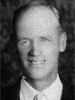
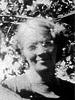

Levi and Elnora Ethel Nielson Sorensen Family Group
Home
Histories
Charts
Photos
Maps
Restricted
News
Info
Contact
 symbol is a link to a history,
symbol is a link to a history,  a source, and the chart
a source, and the chart  symbol is a link to a family group chart.)
symbol is a link to a family group chart.)|
Hans Sorensen and Mathilda Torgersen Evensen |
----> |  |
Levi Sorensen Born 16 Sep 1888 Aurora, Sevier, Utah, USA Died 23 Jun 1977 Aurora, Sevier, Utah, USA Elnora Ethel Nielson Born 1890 Died Married 17 Feb 1915 Sevier, UT | |
|
and |
 |
Keith L. Sorensen Born 4 Jun 1916 Salina, Sevier, Utah, USA Died 8 Jan 2006 Aurora, Sevier, Utah, USA Married Phyllis Jensen 16 Dec 1936 Manti, Sanpete, Utah, USA The 1st child of Levi Sorensen and Elnora Ethel Nielson |
|
Wayland V. Sorensen Married Norma Ray Savage The 2nd child of Levi Sorensen and Elnora Ethel Nielson |